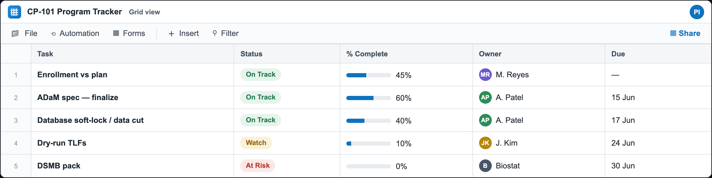
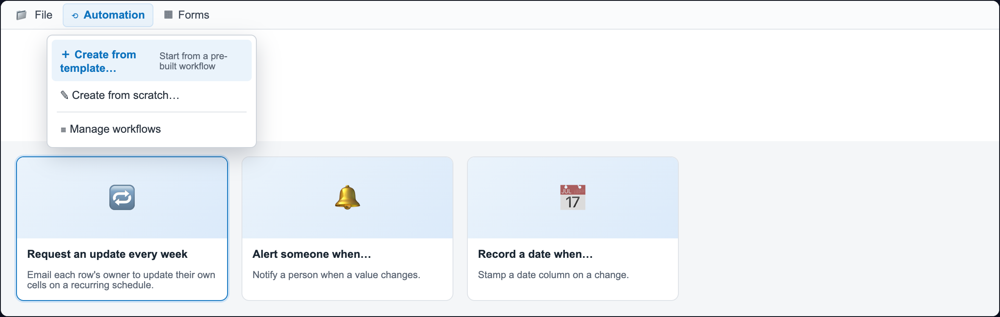
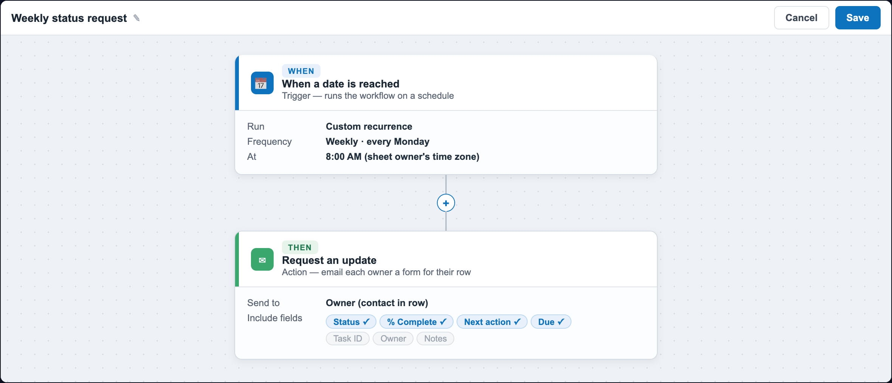
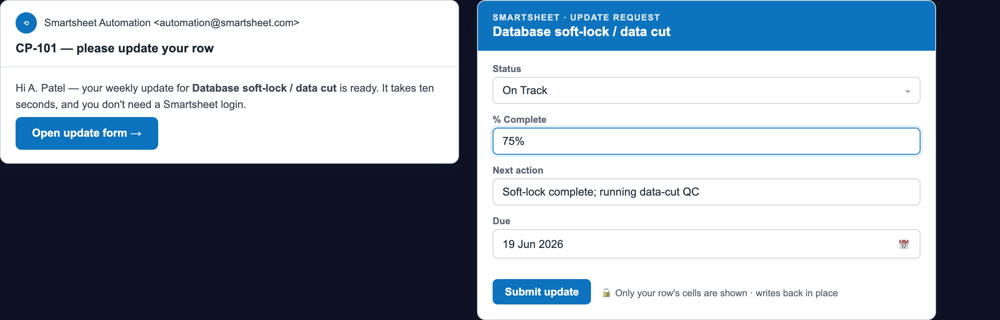
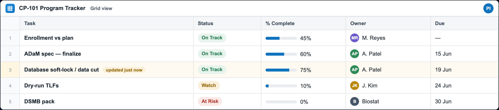

Keep your Smartsheet tracker current — no code
A no-programming companion that lets the whole study team — project management, data management, medical writers — keep a Smartsheet program tracker current automatically, using only Smartsheet’s own Automation and, for your email, Outlook’s own Rules. No Power Automate, no scripts, no SAS, no R — and no PHI on the sheet.
1. Smartsheet keeps existing rows current by asking their owners. A recurring Request an update emails each owner a one-click mini-form of just their cells; they Submit and it writes back to the row — in place, no duplicates, no login.
2. Everything here is native. Smartsheet’s own Automation handles updates, alerts, reminders, and the weekly digest; native Smartsheet Forms collect new items; Outlook Rules organize your study email. The one thing that genuinely needs code — updating a specific row by key automatically from your validated pipeline — is the SAS/R SHEETLINK in the Biostatistician package.
The 60-second version
- Smartsheet asks for the updates. A recurring Request an update emails each row’s owner just their cells every Monday; they click Open request, fill them in, and Submit — it saves to the row. No one has to open the sheet.
- A form collects new items. A native Smartsheet form adds a new row for each submission — clean intake of new tasks, issues, or requests, straight into the sheet.
- Smartsheet sends the weekly digest. A recurring Alert someone (or a saved Report set to send on a schedule) emails the at-risk & overdue items every Friday — all inside Smartsheet.
- It alerts the right people. When a Status turns At Risk, a Smartsheet Alert someone notifies the PM; native reminders fire before each due date. Configured once, editable by a PM, no code.
Which tool for which job?
| Goal | Native way | Tool |
|---|---|---|
| Keep existing rows current | Recurring Request an update — owners refresh their own cells on a schedule. | Smartsheet Automation |
| Collect new items | A Smartsheet form → a new row. | Smartsheet Forms |
| Alerts, reminders, approvals | Alert someone / reminders / Request an approval. | Smartsheet Automation |
| Weekly roll-up / digest | A recurring Alert someone, or a saved Report sent on a schedule. | Smartsheet |
| Organize study email | Rules — move, categorize, flag (the Rules Wizard). | Outlook Rules |
| Update a row by key from a pipeline | Needs the API (code). | SAS/R SHEETLINK — Biostatistician package |
See it on screen, step by step — then build it yourself.
See it on screen — the no-code setup, click by click
No scripting, no add-on, no new vendor. Five screens in Smartsheet’s own Automation give you a tracker that keeps itself current. Here is exactly what each one looks like.





Why it stays current — the self-updating loop
Those five screens wire up one loop that then runs on its own every week — nobody has to remember to chase updates:
A native Smartsheet form feeds new rows into step 1, and Outlook Rules keep the study email organized alongside — both covered below.
Two native engines — and an honest boundary
Nothing here is programming, and there’s no Power Automate. Smartsheet’s own Automation lives inside the sheet and does the heavy lifting; Outlook’s own Rules organize your study email. Both are point-and-click features of tools you already have.
Engine 1 — Smartsheet Automation (does almost everything)
Automation builds a workflow from a trigger + optional condition + action. The three that matter here: a recurring Request an update (owners edit existing rows, so the tracker stays current and never duplicates), a recurring Alert someone (the weekly digest and the at-risk page), and a native Smartsheet Form (adds new rows). All point-and-click.
Engine 2 — Outlook Rules (organize the email)
For email, Outlook’s own Rules Wizard (Rules → Manage Rules & Alerts → New Rule) files study-ops mail into a folder, tags, or flags it automatically. The inbox gets organized; the tracker stays current through Smartsheet’s update requests and form — no bridge tool between them.
What the study team should automate
Everything here is operational — status, dates, counts, ownership. None of it is participant-level or clinical.
| Use case | How (no code) | Who |
|---|---|---|
| Owners keep their own rows current | Smartsheet recurring Request an update — each owner gets emailed just their cells; they Submit and it writes back, in place. | PM sets up; whole team responds |
| New task / issue / request intake | A native Smartsheet form adds a new row per submission. | DM, CRAs, vendors submit |
| Due-date reminders | Smartsheet When a date is reached → Alert someone, e.g. 3 days before Due. | PM sets up once |
| At-risk alerts & escalation | Smartsheet When rows are changed → Alert someone / Request an approval. | PM sets up once |
| Weekly roll-up / digest | A recurring Alert someone, or a saved Report sent on a schedule — the at-risk & overdue items. | PM / medical writer |
| Organize study email | Outlook Rules — file, categorize, or flag study-ops mail automatically. | PM / study lead |
| Hand-offs & coverage | Smartsheet alert on an owner change → notify the new owner. | PM sets up once |
| Update rows by key from a validated pipeline | Needs code/API — the SAS/R SHEETLINK (Biostatistician package), not no-code. | Biostatistician |
Make the tracker update itself — Smartsheet Automation, zero other tools
The single highest-value automation, entirely inside Smartsheet: the tracker asks its owners for updates on a schedule, so it’s current every Monday without anyone opening it. (You need to be a licensed user with Owner or Admin permission on the sheet to build workflows.)
A — the recurring “Request an update” (keeps the tracker alive)
Fastest path: Smartsheet ships this as a template. Automation → Create a workflow from a template → Popular Templates → “Request an update every week” → Use template, then set the recipient and columns. Or build it yourself:
- Open the sheet → Automation → Create a workflow → start from blank.
- Trigger: When a date is reached → change Run once to Custom → in Custom Recurrence choose Week, Mondays, with a start date (and a trigger time).
- (Optional) Condition: only rows where
Statusis not Complete, so finished work stops pestering people. - Action: Request an update → send to the row’s Assigned To contact (the standard Smartsheet Contact column) → include only the columns they own (
Status,% Complete,Next action,Due). - Save. Each Monday every open row’s owner gets an email; they click Open request, fill just their cells, and Submit — it writes straight back to that row.
B — alert on a slip (configure once)
- Automation → Create a workflow → Trigger: When rows are changed, watching the
Statuscolumn. - Condition:
Statusis At Risk. - Action: Alert someone → the PM (and the row owner) — message: “{{Task}} is now At Risk, due {{Due}}.” (You can also Alert a Microsoft Teams channel.)
C — reminders before a due date
Automation → Trigger: When a date is reached → Due, 3 days before → Action: Alert someone (the owner). Smartsheet watches the calendar; you do nothing else.
Collect new items with a Smartsheet form
When people who don’t live in Smartsheet need to send in new items — CRAs, vendors, data management — give them a native Smartsheet form. Each submission becomes a new row, straight into the sheet, with no other tool. (Forms add rows; to keep existing rows current, use the recurring Request an update.)
- In the sheet → Forms → Create form. Smartsheet builds a form from your columns.
- Keep only operational fields (
Task,Status,% Complete,Note,Assigned To); arrange and label them, then publish and share the link (or embed it on a page). - Every submission adds a new row — and that new row can itself trigger an Alert someone workflow (“new request logged → notify the PM”).
- Optionally require fields or show a confirmation message — all in the form builder, no code.
Organize the email & send the digest — all native
Organize study email with Outlook Rules
Use Outlook’s own automation — the built-in Rules feature — so study-ops mail organizes itself. No Power Automate:
- In new Outlook (the current default) or Outlook on the web: Settings ⚙ → Mail → Rules → + Add new rule. (Classic Outlook: Home → Rules → Manage Rules & Alerts → New Rule — the Rules Wizard.)
- Condition: Subject includes
CP-101(or From the CRO distribution list). - Action: Move to a
CP-101folder, add Mark with category, then Save. (Classic: the same picks end with Finish.) - Now study mail is filed and tagged automatically — the team works from a clean folder and updates the tracker through the recurring Request an update or the form.
The weekly digest — inside Smartsheet
No external scheduler — Smartsheet sends it:
- Easiest: build a Report filtered to
Status= At Risk orDueoverdue, then Send it on a recurring schedule (e.g., Friday 4 PM) to the team. - Or: an Automation — trigger When a date is reached (custom weekly recurrence) → Alert someone, with the matching at-risk & overdue rows in the message.
- Either way it’s one current summary every week, sent automatically by Smartsheet — no code, no Power Automate.
Governance, safety & honest limits
The data boundary (the reason this is safe to automate)
- Operational columns only. Milestone dates, deliverable/QC status, % Complete, aggregate counts, ownership. Never a participant-level value, anything unblinded or PHI, or a reported clinical number. The tracker is an operational convenience, not a clinical record.
- Smartsheet is a tracker, not a system of record. The validated outputs (SAS/R, Phoenix WinNonlin, the EDC/CTMS) remain the source of truth; the sheet mirrors operational status.
- No AI and no bridge tool. Everything is point-and-click in Smartsheet and Outlook; nothing parses your email into the sheet, so there’s nothing to mis-read or mis-route.
Set-up safety (no code, but still real systems)
- Workflows are owned by a licensed user. Building Smartsheet Automation needs Owner or Admin permission on the sheet; keep that with the PM (and a named backup) so it doesn’t break when someone leaves.
- Share the sheet to the right people only. Update requests can reach any email address you choose, but editing the sheet itself stays restricted to the team.
- Test on a copy first. Build the workflow on a sandbox copy of the sheet, confirm it behaves, then turn it on for the live tracker.
- Recipients live in the workflow. Keep who-gets-told in Smartsheet’s Automation, where a PM can edit it — no code anywhere.
The honest limit
FAQ
Do we need Power Automate? No — we deliberately don’t use it. Smartsheet’s own Automation keeps rows current and sends the alerts, reminders, and weekly digest; native Smartsheet Forms collect new items; Outlook Rules organize the email. All point-and-click, in tools you already have.
Do we need to write any code? No. Everything here is built in Smartsheet’s Automation/Forms and Outlook’s Rules — no scripts. This is the no-programming sibling of the SAS/R-driven version (which lives in the Biostatistician package).
Will it create duplicate rows? No — the recurring Request an update edits the existing row in place. A form adds a genuinely new row per submission, so use it for new items, not to refresh existing ones.
Do recipients need a Smartsheet license to respond? No. An update request works for any email address — they click Open request, fill their cells, and Submit. (A plain email reply does not write back.)
What about getting an email’s contents into a row automatically? That’s the one thing that needs code/the API (the SAS/R SHEETLINK). For the team, organize the mail with Outlook Rules and keep rows current with the Request an update — no bridge tool needed.
Do we have to buy anything? Smartsheet Automation and Forms are included with Smartsheet (building workflows needs a licensed user with Owner/Admin on the sheet). Outlook Rules are included with Outlook. Nothing else.
Could this leak PHI? Only if someone puts PHI on the sheet — so don’t. Keep the columns operational; the tracker is a convenience mirror, not a clinical record.
How is this different from the SAS/R “SHEETLINK”? Same goal — a self-current tracker — with no programming, so the rest of the study team can own it. The SAS/R version does the one thing this can’t: update existing rows by key automatically from a validated pipeline.